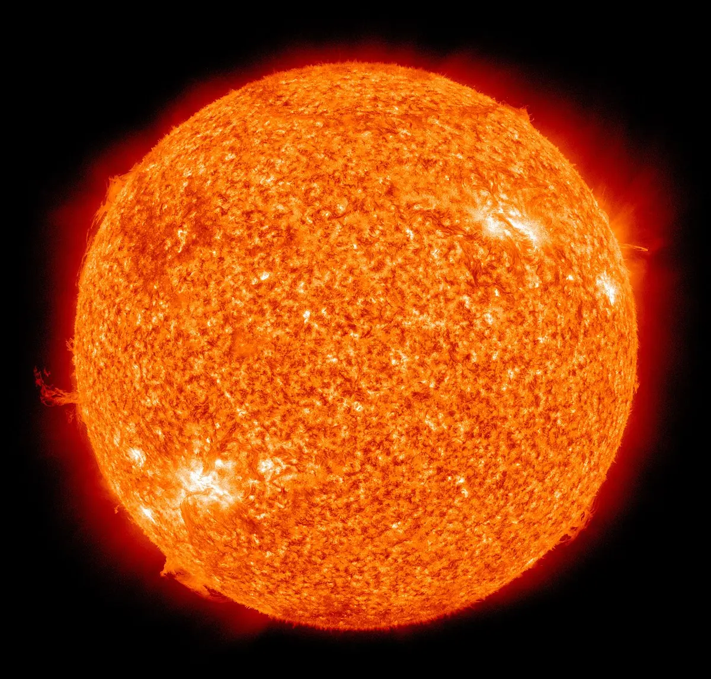

Themes › Theme E Nuclear and quantum physics
E.5Fusion and stars
Every star is a giant fusion reactor, held together by its own gravity. This topic explains how fusion powers stars, why a star stays stable for billions of years, how we measure the distances and sizes of stars we can never visit, and how the Hertzsprung–Russell diagram sorts them and reveals their life stories. It brings together E.3, B.1 (black-body radiation) and D.1 (gravity). There is no extra HL content in E.5.
Knowledge and science
Nature of science
Measurement. Stellar parallax is so small that it was first measured only in 1838, by Friedrich Bessel, for the star 61 Cygni: about a third of an arcsecond. Its absence had long been used as an argument that the Earth doesn't move.
Collaboration. At Harvard, Annie Jump Cannon classified the spectra of around 350 000 stars by hand, creating the O B A F G K M sequence. Cecilia Payne-Gaposchkin showed in 1925 that stars are mostly hydrogen and helium; at first, senior astronomers persuaded her to call the result "almost certainly not real".
Patterns. Around 1910 Ejnar Hertzsprung and Henry Norris Russell each plotted the luminosity of stars against their temperature, and found the stars fell into a few distinct groups.
Technology. The Gaia space telescope (2013–2025) measured the parallax of over a billion stars, with a precision hundreds of times better than is possible from the ground.
ToK: questions to think about
- Can we understand what we can't imagine? The nearest star is 40 trillion km away. Do numbers like this give us knowledge, or just the feeling of it?
- How can we study a process we can't watch? A star's life lasts millions or billions of years, but we only ever see each star at one moment. How do snapshots of many stars become a story about one?
- Who decides what is "real"? Payne-Gaposchkin's correct result was doubted because it went against expert opinion. When should a new result overturn a consensus?
- Is the light we see the star we think it is? Light from distant stars left them long ago. Some may no longer exist. What does it mean to observe the past?
1. Nuclear fusion
Nuclear fusion is the joining of two light nuclei to form a heavier one. Light nuclei are on the steep left side of the binding energy curve (E.3), so fusing them increases the binding energy per nucleon and releases energy. Per kilogram of fuel, fusion releases even more energy than fission.
The main process in the Sun is the proton–proton chain. Its overall effect is to turn four protons into one helium-4 nucleus:
$$4\,{}^{1}_{1}\text{p} \rightarrow {}^{4}_{2}\text{He} + 2\,{}^{\;\;0}_{+1}\text{e} + 2\nu_e$$The positrons quickly annihilate with electrons, releasing more energy as gamma rays.

Worked example: energy from the proton–proton chain
Using atomic masses (hydrogen-1 = 1.007825 u, helium-4 = 4.002603 u), find the energy released when four hydrogen atoms become one helium atom.
$\Delta m = 4 \times 1.007825 - 4.002603 = 0.028697$ u, so $E = 0.028697 \times 931.5 = 26.7$ MeV.
Using atomic masses automatically includes the energy from the positrons annihilating. About 0.7% of the original mass becomes energy.
Worked example: deuterium–tritium fusion
Fusion reactors on Earth aim to use $^{2}_{1}\text{H} + {}^{3}_{1}\text{H} \rightarrow {}^{4}_{2}\text{He} + {}^{1}_{0}\text{n}$. The masses are 2.014102 u, 3.016049 u, 4.002603 u and 1.008665 u. Find the energy released.
$\Delta m = (2.014102 + 3.016049) - (4.002603 + 1.008665) = 0.018883$ u, so $E = 17.6$ MeV.
Worked example: how fast is the Sun losing mass?
The Sun's luminosity is $3.83 \times 10^{26}$ W. $\dfrac{\Delta m}{\Delta t} = \dfrac{L}{c^2} = \dfrac{3.83 \times 10^{26}}{(3.00 \times 10^8)^2} = 4.3 \times 10^9\ \text{kg s}^{-1}$: over four million tonnes every second. Even so, in its whole lifetime the Sun will turn less than 0.1% of its mass into energy.
Linking question How is fusion like fission, and how is it different? E.4 What is fission? →
2. Conditions for fusion
Nuclei are positive, so they repel. To fuse, they must get close enough (about $10^{-15}$ m) for the strong force to take over. That needs:
- Very high temperature (about $10^7$ K in the Sun's core), so the nuclei move fast enough to overcome the electric repulsion. At these temperatures atoms are completely ionized into a plasma of nuclei and electrons.
- Very high density, so collisions are frequent enough for a useful rate of fusion.
In a star, both come from gravity: as a cloud of gas collapses, its gravitational potential energy becomes thermal energy, and the core becomes hot and dense. On Earth, reactors such as tokamaks hold a plasma at over $10^8$ K with strong magnetic fields, because no material container could survive. Getting more energy out than is put in, for long periods, is still being worked on.
3. The equilibrium of a star
A main-sequence star is stable because two effects balance at every layer:
- Gravity pulls all the star's matter inwards.
- Radiation pressure (from the photons produced by fusion) and gas pressure (from the hot plasma) push outwards.
The balance is self-correcting. If the core contracts slightly, it heats up, fusion speeds up, the pressure rises and pushes it back out. If it expands, it cools, fusion slows, and gravity pulls it back. When the fuel in the core runs out, the balance is lost and the star changes (section 9).
Linking question How can the gas laws be used to model a star? NoS B.3 The ideal gas equation →
4. Astronomical distances
Metres are inconveniently small for astronomy, so three larger units are used:
- Astronomical unit (AU): the mean distance from the Earth to the Sun. $1\ \text{AU} = 1.50 \times 10^{11}$ m.
- Light year (ly): the distance light travels in a vacuum in one year. $1\ \text{ly} = 9.46 \times 10^{15}$ m.
- Parsec (pc): the distance at which a star has a parallax angle of one arcsecond (section 5). $1\ \text{pc} = 3.26\ \text{ly} = 3.09 \times 10^{16}$ m.
An arcsecond is $\frac{1}{3600}$ of a degree. The light year is a distance, not a time: $3.00 \times 10^8 \times 365.25 \times 24 \times 3600 = 9.46 \times 10^{15}$ m.
Worked example: converting units
A star is 8.6 ly away (about the distance of Sirius). Express this in metres, parsecs and AU.
Metres: $8.6 \times 9.46 \times 10^{15} = 8.1 \times 10^{16}$ m.
Parsecs: $\dfrac{8.6}{3.26} = 2.6$ pc.
AU: $\dfrac{8.1 \times 10^{16}}{1.50 \times 10^{11}} = 5.4 \times 10^{5}$ AU.
For scale: light takes about 8 minutes to reach us from the Sun, the nearest other star is about 4.2 ly away, and our galaxy is about 100 000 ly across.
5. Stellar parallax
Hold up a finger and look at it with one eye, then the other: it seems to jump against the background. This is parallax. As the Earth orbits the Sun, a nearby star seems to move slightly against much more distant background stars, and returns to the same place every year.
In the right-angled triangle Sun–Earth–star, $\tan p = \dfrac{1\ \text{AU}}{d}$. Because $p$ is tiny, $\tan p \approx p$ in radians, so $d = \dfrac{1\ \text{AU}}{p}$. Measuring $p$ in arcseconds and $d$ in parsecs makes this simple:
The smaller the parallax angle, the further away the star.
Worked example: a nearby star
A star has a parallax angle of 0.25 arcseconds. How far away is it, in parsecs, light years and metres?
$d = \dfrac{1}{0.25} = 4.0$ pc $= 4.0 \times 3.26 = 13$ ly $= 13 \times 9.46 \times 10^{15} = 1.2 \times 10^{17}$ m.
Limits. From the ground, the atmosphere blurs images, so angles below about 0.01″ can't be measured: parallax works only up to about 100 pc. Space telescopes like Gaia reach thousands of parsecs, but that is still only a small part of our galaxy. Other methods are used further away.
Linking question How has technology helped us collect data from distant stars? NoS C.5 Redshift, blueshift and astronomy →
6. What starlight tells us
- Temperature: a star is close to a black body (B.1). The wavelength of its peak emission gives its surface temperature by Wien's law, $\lambda_{\max}T = 2.9 \times 10^{-3}$ m K. Hot stars look blue-white; cool stars look red.
- Composition: the cooler outer layers of a star absorb particular wavelengths, giving dark absorption lines (E.1). Matching them to laboratory spectra shows which elements are present. Most stars are about 73% hydrogen and 25% helium by mass.
- Spectral class: stars are classified by their spectra into classes O, B, A, F, G, K, M, from hottest (above 30 000 K, blue) to coolest (below about 3500 K, red). The Sun is a G star, about 5800 K. Which lines are strongest depends mostly on temperature, not on composition.
- Luminosity: the apparent brightness $b$ we measure and the distance $d$ give the luminosity, from $b = \dfrac{L}{4\pi d^2}$ (B.1).
Linking question How do spectra tell us about the things we see in space? E.1 Emission and absorption spectra → · C.5 Redshift, blueshift and astronomy →
7. Finding the radius of a star
Stars are too far away to measure their size directly. But a star's luminosity depends on its surface area and temperature, by the Stefan–Boltzmann law (B.1):
The method: find $T$ from the peak wavelength (Wien's law), find $L$ from the apparent brightness and distance, then find $R$.
Worked example: a hot star
A star's spectrum peaks at 290 nm, and its luminosity is $1.5 \times 10^{28}$ W (about 40 times the Sun's). Find its radius.
$T = \dfrac{2.9 \times 10^{-3}}{2.90 \times 10^{-7}} = 1.0 \times 10^4$ K.
Bottom of the fraction: $4\pi\sigma T^4 = 4\pi \times 5.67 \times 10^{-8} \times (1.0 \times 10^4)^4 = 7.1 \times 10^{9}$.
$R = \sqrt{\dfrac{L}{4\pi\sigma T^4}} = \sqrt{\dfrac{1.5 \times 10^{28}}{7.1 \times 10^{9}}} = 1.5 \times 10^9$ m, about twice the Sun's radius.
Worked example: comparing with the Sun
A red giant is 100 times as luminous as the Sun, with a surface temperature of 4000 K (the Sun's is 5800 K). How many times bigger is it?
From $L \propto R^2T^4$: $\dfrac{R}{R_\odot} = \sqrt{\dfrac{L}{L_\odot}} \times \left(\dfrac{T_\odot}{T}\right)^2 = \sqrt{100} \times \left(\dfrac{5800}{4000}\right)^2 = 10 \times 2.1 = 21$.
It is cooler than the Sun but much brighter, so it must be much bigger.
Linking question How does black-body radiation help us find the properties of stars? B.1 Thermal radiation and black bodies →
8. The Hertzsprung–Russell diagram
The HR diagram plots each star's luminosity (vertical axis, usually relative to the Sun) against its surface temperature (horizontal axis). Both scales are logarithmic, and temperature increases to the left.
![A Hertzsprung–Russell diagram on a black background. Luminosity compared with the Sun runs up the vertical axis from 10 to the minus 5 to 10 to the 6, and surface temperature runs along the bottom from about 40 000 K on the left to below 3000 K on the right, over a colour bar from blue to red. Stars are drawn as coloured balls, bigger for bigger stars. The main sequence runs diagonally from large blue stars at the top left, through the Sun, to small red stars at the bottom right, ending with the red dwarf AB Doradus C. Large orange and red giants lie above the main sequence on the right, very large supergiants lie across the top, and white dwarfs lie in a pale band below and to the left.](../images/e5/hr-diagram-eso.jpg)
- Main sequence: about 90% of stars, including the Sun. They fuse hydrogen into helium in their cores. Hot ones at the top left are massive, large and very luminous; cool ones at the bottom right are small, low-mass red dwarfs.
- Red giants: cool (red) but luminous, so they must be large: 10–100 times the Sun's radius. They are stars that have used up the hydrogen in their cores.
- Supergiants: extremely luminous, up to about $10^6 L_\odot$, and enormous: up to 1000 times the Sun's radius. They evolve from massive stars, and can be red (cool) or blue (hot).
- White dwarfs: hot (white) but very dim, so they must be tiny, about the size of the Earth. They are the exposed cores of dead low-mass stars, with no fusion, slowly cooling.
- Instability strip (not drawn above): a narrow, nearly vertical band crossing the main sequence. Stars in it pulsate, their outer layers expanding and contracting, so their luminosity varies with a regular period.
Lines of constant radius. From $L = 4\pi R^2\sigma T^4$, stars of the same radius lie along straight lines on the HR diagram, sloping down from top left to bottom right (you may be asked to sketch them). Moving up and to the right means bigger stars: that is why giants and supergiants are so large and white dwarfs so small.
![An HR diagram with luminosity compared with the Sun on the vertical axis, from 10 to the minus 4 up to 10 to the 7, and temperature on the horizontal axis, from 50 000 K on the left to 2000 K on the right. Parallel dotted lines slope down from top left to bottom right, labelled R equals 0.001, 0.01, 0.1, 1, 10, 100 and 1000 solar radii, with the bigger radii further up and to the right. A thick black curve, the main sequence, runs from the top left to the bottom right, with tick marks giving star masses from 40 solar masses at the top down to 0.1 solar masses at the bottom. Named stars are marked: HD 93129 A, Beta Scorpii, Vega, Sirius, Altair, the Sun, 61 Cygni and Barnard's star on the main sequence; Polaris, Aldebaran, Mira, Mu Cephei and Betelgeuse above and to the right, between the 10 and 1000 solar-radius lines; Sirius B and Procyon B at the bottom left, near the 0.01 solar-radius line.](../images/e5/hr-radius-lines.png)
The HR diagram also lets us estimate the distance of a main-sequence star too far away for parallax: its spectrum gives its temperature, the diagram gives its luminosity, and its apparent brightness then gives its distance.
Linking question HR diagrams classify stars by spotting patterns. Where else does physics use classification? NoS
9. How stars evolve
Every star begins as a cloud of gas and dust (a nebula), which collapses under gravity. As it shrinks it heats up, forming a protostar. When the core reaches about $10^7$ K, hydrogen fusion starts and the star joins the main sequence, where it spends about 90% of its life. What happens next depends on its mass.
More massive stars burn out faster. A massive star has much more fuel, but its core is hotter and denser, so it fuses far faster and is enormously more luminous. The Sun will spend about 10 billion years on the main sequence; a star of 25 solar masses only about 7 million years.
Low-mass stars (up to about 8 solar masses), like the Sun
- Hydrogen in the core runs out. The core contracts and heats up; hydrogen fuses in a shell around it, and the outer layers swell and cool. The star becomes a red giant.
- The core becomes hot enough to fuse helium into carbon and oxygen.
- The outer layers drift away as a glowing shell of gas, a planetary nebula.
- The carbon–oxygen core is left as a white dwarf. It is held up against gravity by electron degeneracy pressure: electrons resist being squeezed into the same states. A white dwarf can only exist if its mass is below about 1.4 solar masses (the Chandrasekhar limit).
High-mass stars (above about 8 solar masses)
- The star becomes a red supergiant. Its core is hot enough to fuse heavier and heavier elements in layers, like an onion: carbon, neon, oxygen, silicon, and finally iron.
- Iron is at the peak of the binding energy curve, so fusing it releases no energy. The core can no longer support itself and collapses in less than a second.
- The outer layers rebound off the collapsed core in a supernova, which can briefly outshine a whole galaxy. Elements heavier than iron are made in the explosion and scattered into space.
- The core is left as a neutron star (held up by neutron degeneracy pressure, with the density of a nucleus) if its mass is below about 2–3 solar masses (the Oppenheimer–Volkoff limit). Above that, nothing can stop the collapse, and it becomes a black hole.
On the HR diagram, the Sun will move from the main sequence up and to the right to the red giants, then across and down to the white dwarfs.
The elements in your body were made in stars: the hydrogen in the Big Bang, the carbon and oxygen in red giants, and heavier elements in supernovae (and in collisions between neutron stars).
10. Common mistakes
- Reading the temperature axis the wrong way. On the HR diagram, temperature increases to the left.
- Saying a light year is a time. It is a distance.
- Using the full angle of shift as the parallax angle. $p$ is half of it, measured using a baseline of 1 AU.
- Forgetting to square $R$ or raise $T$ to the fourth power in $L = 4\pi R^2\sigma T^4$; using °C instead of K.
- Saying stars are held up by their fusion "explosion". They are in equilibrium: gravity inwards, gas and radiation pressure outwards.
- Thinking massive stars live longer because they have more fuel. They use it far faster, so they live much shorter lives.
- Saying white dwarfs are hot because fusion still happens. They are just cooling down; they have no fusion.
11. Check your understanding
Why does fusion need such a high temperature?
Nuclei are positively charged and repel. Only very fast nuclei can get close enough (about $10^{-15}$ m) for the strong force to bind them, and high temperature means high kinetic energy.
A star has a parallax angle of 0.050″. How far away is it in light years?
$d = \frac{1}{0.050} = 20$ pc $= 20 \times 3.26 = 65$ ly.
Two stars have the same surface temperature, but star X is 16 times as luminous as star Y. Compare their radii.
$L \propto R^2$ at fixed $T$, so $R_X = \sqrt{16}\,R_Y = 4R_Y$.
Where on the HR diagram are stars that are very hot but very dim, and what are they?
Bottom left: white dwarfs. Being hot but dim means they must be very small.
Why can't a star produce energy by fusing iron?
Iron has the highest binding energy per nucleon (near the peak of the curve), so fusing it into heavier nuclei would absorb energy, not release it.
What decides whether a star ends as a white dwarf, a neutron star or a black hole?
Its mass. Low-mass stars leave white dwarf cores below 1.4 solar masses. High-mass stars explode as supernovae, leaving a neutron star or, if the core is above about 2–3 solar masses, a black hole.